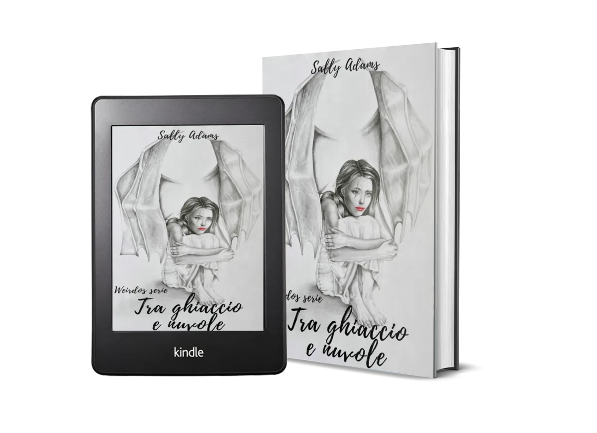

Weirdos #1
Between Ice
Between Ice
and Clouds
Weirdos Series · Vol. 1 · 298 pp. · June 2022
Between Ice and Clouds (Tra Ghiaccio e Nuvole)
Viky & Damon
Twelve months have passed since her ex-boyfriend beat her within an inch of her life and, even though she woke from the coma, Viky seems trapped in the terrible darkness of that moment. Damon is surly and impenetrable. He has learned that you can't trust anyone — let alone that intruder who makes his stomach twist in a strange way.
A story of deep friendship and unexpected love. A story that teaches us that even the thickest ice can melt, and that clouds don't always bring rain.
Hurt-comfort
Strangers to lovers
Found family